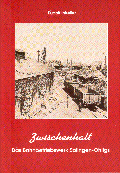
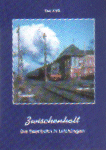
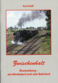
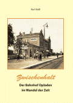

Krümelbahn
KrümelbahnZwischenhalt
 |
Inkeller, Rudolf Zwischenhalt Das Bahnbetriebswerk in Ohligs Verlag A.Kaiß, Leichlingen 2003 ISBN 3-9806103-8-1 |
| Kaiß, Kurt Zwischenhalt Die Eisenbahn in Leichlingen Verlag A.Kaiß, Leichlingen 2004 ISBN 3-9806103-9-X |
 |
 |
Kaiß, Kurt Zwischenhalt Blumenberg - ein Bördedorf und sein Bahnhof Verlag A.Kaiß, Leichlingen 2014 ISBN 978-3-9809357-4-6 |
| Kaiß, Kurt Zwischenhalt Der Bahnhof Opladen im Wandel der Zeit Verlag A.Kaiß, Leichlingen 2016 ISBN 978-3-9809357-9-1 |
 |
| Kaiß, Kurt/Becker, Birgit Zwischenhalt Die Kleinbahn Opladen - Lützenkirchen Verlag A.Kaiß, Leichlingen 2024 ISBN 978-3-9818345-5-0 |